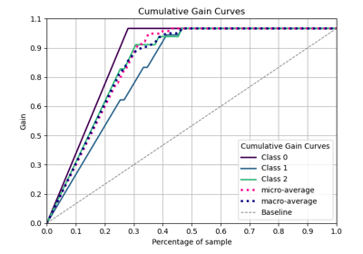
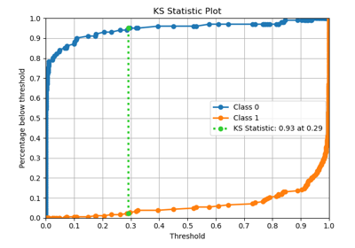
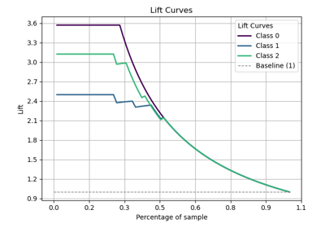

Examples based on deciles#
Examples related to the scikitplot.deciles module with e.g. sklearn.linear_model.LogisticRegression instance.

sphx_glr_auto_examples_deciles_plot_cumulative_gain_script.py
plot_cumulative_gain with examples

sphx_glr_auto_examples_deciles_plot_ks_statistic_script.py
plot_ks_statistic with examples

sphx_glr_auto_examples_deciles_plot_lift_script.py
plot_lift_curve with examples